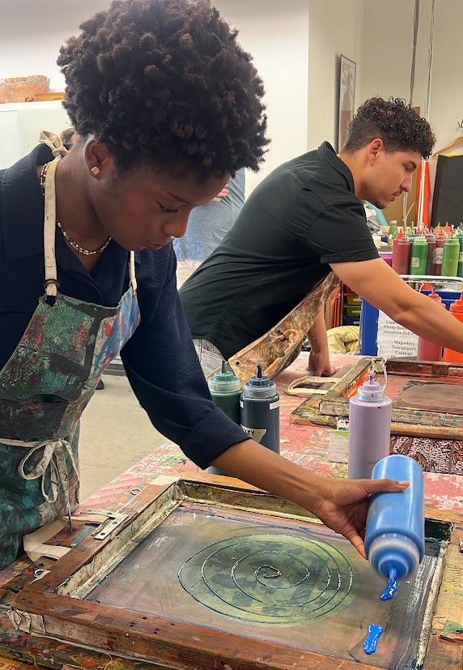

digital archive
looking closely at the things we notice, the things we miss, and everything in between.
A collection of paintings, drawings, and writing exploring perception, imperfection, identity, observation, and the moments that stay with me.
Loading the archive…
paintings
drawings
writing
poetry & essays
a little about me

Hi, my name is Abiola. I'm a visual artist & this is my digital art portfolio! My pieces tend to explore themes like perception, imperfection, and identity. I usually work in charcoal and acrylics. A lot of my work comes from observation. After moving to the U.S., I became very aware of how I existed in spaces; sometimes visible, sometimes unnoticed. Drawing became a way for me to slow down and understand those moments. I'm especially drawn to the human form, because posture, light, and stillness can reveal things that words often cannot.
abiolaoyefule@gmail.com